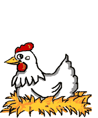

Main Page
Main Page  ICT
ICT  AP
AP Agrikultura
Ito ay isang agham at sining na may kinalaman sa pagpaparami ng mga hayop at mga tanim o halaman. Ito’y may kaugnayan sa lahat ng gawain ng sangkot ang mga hayop at halaman.
Kilala ito bilang primary sector.
Mga Subsektor ng Agrikultura
Pagsasaka
Maraming mga pangunahing pananim ang bansa tulad ng palay, mais, niyog, tubo, saging, pinya, kape, mangga, tabako, & abaka.
Tinatayang umabot ng ₱797.731 bilyon ang kabuuang kita mula sa pagsasaka. Ito’y nagmula sa mga produktong palay, mais, at iba pang pangunahing pananim ng Pilipinas.
Paghahayupan
Ang sangay ng agrikultura na may kinalaman sa mga hayop na itinaas para sa karne, habila, gatas, itlog, o iba pang mga produkto.
Kasama rito ang pang-araw-araw na pangangalaga, pumipili ng pag-aanak at pagpapalaki ng hayop.

https://clipart-library.com/img/1861791.gif
Pangingisda
Itinuturing ang Pilipinas bilang isa sa mga pinakamalaking tagatustos ng isda sa buong mundo. Samantala, ang pangingisda ay nauuri sa tatlo:
- Komersiyal(malalaking isda)
- Munisipal(pampang)
- Aquaculture(scientific fishing)
Bahagi din ng gawaing pangingisda ay ang panghuhuli ng hipon, sugpo, at pag-aalaga ng mga dagat na ginagamit sa paggawa ng gulaman.
Paggugubat/Pagtotroso
Pinagkukunan ng: plywood, tabla, troso, veneer, etc
Kahalagahan ng Agrikultura:
- Nagpapasok ng dolyar sa ating bansa.
- Pinagkukunan ng sobrang manggagawa patungo sa ibang sektor ng ekonomiya.
- Nagkakaloob ng trabaho sa maraming Pilipino.
- Ito’y pinagmumulan ng pagkain.
- Pinagkukunan ng hilaw na materyales na ginagamit ng industriya upang makabuo ng panibagong produkto.
Suliranin ng Agrikultura:
Pagsasaka
- pagliit ng lupang sakahan.
- paggamit ng bagong makabagong teknolohiya.
- kakulangan sa mga pasilidad at imprastraktura sa kabukiran.
- kakulangan ng suporta mula sa iba pang sektor.
- pagbibigay prayoridad sa sektor ng industriya pagdagsa ng dayuhang kalakal.
- climate change.
Paghahayupan
- kahirapan sa hanay ng mga mangingisda.
- mga mapanirang operasyon ng pangingisda. (Hal: Dynamite Fishing)
Pangingisda
- mga peste o sakit.
Paggugubat/Pagtotroso
- mabilis na pagkaubos ng likas na yaman.
Mga Patakaran & Programa hinggil sa Pagpapaunlad sa Agrikulturang Sektor
Panahong hindi pa nasasakop ang Pilipinas
- Kung sino ang maunang magtayo ng bahay, siya ang may-ari ng lupa.
- Wala pa noong titulo o rights.
- ang pinagbabasehan lang nila ay ang salita ng bawat isa bilang paggalang.
Panahon ng kastila
- Encomienda System: Lupang gantimpala sa matapat na naglilingkod sa hari ng Espanya at Pilipinong loyal sa kanila.
Panahon ng Amerikano
- Binili ang 160,000 ektarya ng lupa mula sa mga prayle.
- Public Land Act ng 1902: Nakapagloob dito ang pamamahagi ng mga lupaing pampubliko sa mga pamilya na nagbubungkal ng lupa.
- Land Registration Act ng 1902: Sistemang Torrens, ang mga titulo ng lupa ay ipinatalang lahat.
- Batas Republika ng 1160: Nagtatag ng National Resettlement & Rehabilitation Administration (NARRA).
Panahon ng Kasarinlan
- Batas Republika Bilang 1190 ng 1954: Nagbibigay proteksyon laban sa mga pang-aabuso, pananamantala at pandaraya ng mga may-ari ng lupa sa manggagawa.
- Agricultural Land Reform Code of 1963: Ito’y nagpalaya sa mabigat na trabaho; simula ng isang malawakang reporma sa lupa (Agosto 8, 1963).
- Atas ng Pangulo Bilang 2 ng 1972: Itinadhana ng kautusan na isailalim sa reporma sa lupa ang buong Pilipinas.
- Atas ng Pangulo Bilang 27: Lahat ng mga lupang sakahang natatamnan ng palay o mais nang lampas sa limit ng retensyong 7 ektarya bibilhin ng pamahalaan at ipapamahagi sa mga magsasakang walang lupa.
- Batas Republika Blg. 6657 ng 1988: “Comprehensive Agrarian Reform Law (CARL)”; Ipinamamahagi ng batas ang lahat ng lupang agrikultural anuman ang tanim nito sa mga walang lupang mapagsasakahan, pinahintulutan ng dating pangulo Corazon Aquino. Kabilang dito ang lahat ng publiko at pribadong lupang agrikultural at nakapaloob sa Comprehensive Agrarian Reform Program (CARP)
Nais Maisakatuparan ng Pamahalaan Upang Maiangat ang Kalagayang Pangkabuhayan ng mga Magsasaka Batay sa CARP 2003:
- Pagtatayo ng bahay-ugnayan para sa mga magsasaka upang masigurong mayroon suportang maibibigay sa kanila.
- Pagtatayo ng gulayan para sa mga magsasaka.
- Pagsisiguro na ang mga anak ng mga magsasaka ay makapag-aral kaya itinayo ang Pangulong Diosdado Macapagal Agrarian Reform Scholarship Program.
- KALAHI Agrarian Reform Zones.
Pangingisda:
- Fishery Research.
- Philippine Fisheries Code of 1998: Paglilimita ng pamahalaan at naglalayon ng wastong paggamit sa yamang tubig.
Pagtotroso:
- CLASP
- NIPAS
- Sustainable Forest Management Strategy (SFMS)